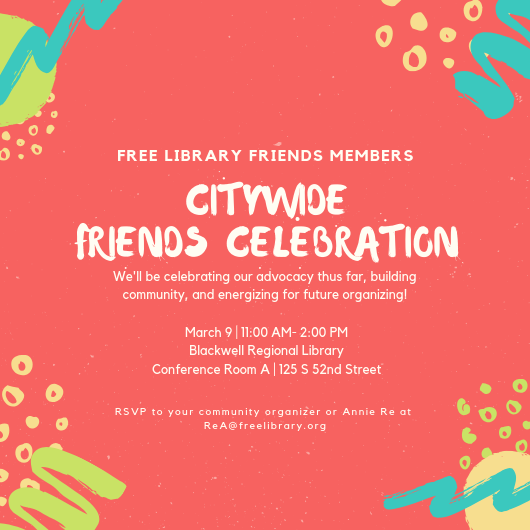

Resume
Kelly McGeehan
1251 S Apple Street
Philadelphia, PA 19151
(215) 999-0000
kelly.mcgeehan@temple.edu
Education
Anticipated May 2020. B.A. English with Concentration in Creative Writing.
PDF Version
The printable version of my resume is available: link here
Competencies
- Written and oral communication skills.
- Proficiency in Excel, Wordpress, Canva, and Adobe.
Relevant Course Work
- Topics in Professional Writing
- Advanced Creative Writing: Poetry
- Introduction to Nonfiction
Work Experience
2018- Present. Administrative Creative Assistant, Free Library of Philadelphia Foundation.
- Created website and newsletters for friends members, and sent emails on behalf of administration.
- Communicated with community members via outreach and interviewing.
- Created images and posted on library's social media platforms in preparation for Full Funding Campaign, as seen below.

2014- 2018. Receptionist, Premier Physical Therapy.
- Provided customer service for patients and insurance companies on both telephone and email.
- Responded and resolved to issues regarding scheduling, payments, and billing to ensure a quality experience.
- Organized company documents and typed daily reports.